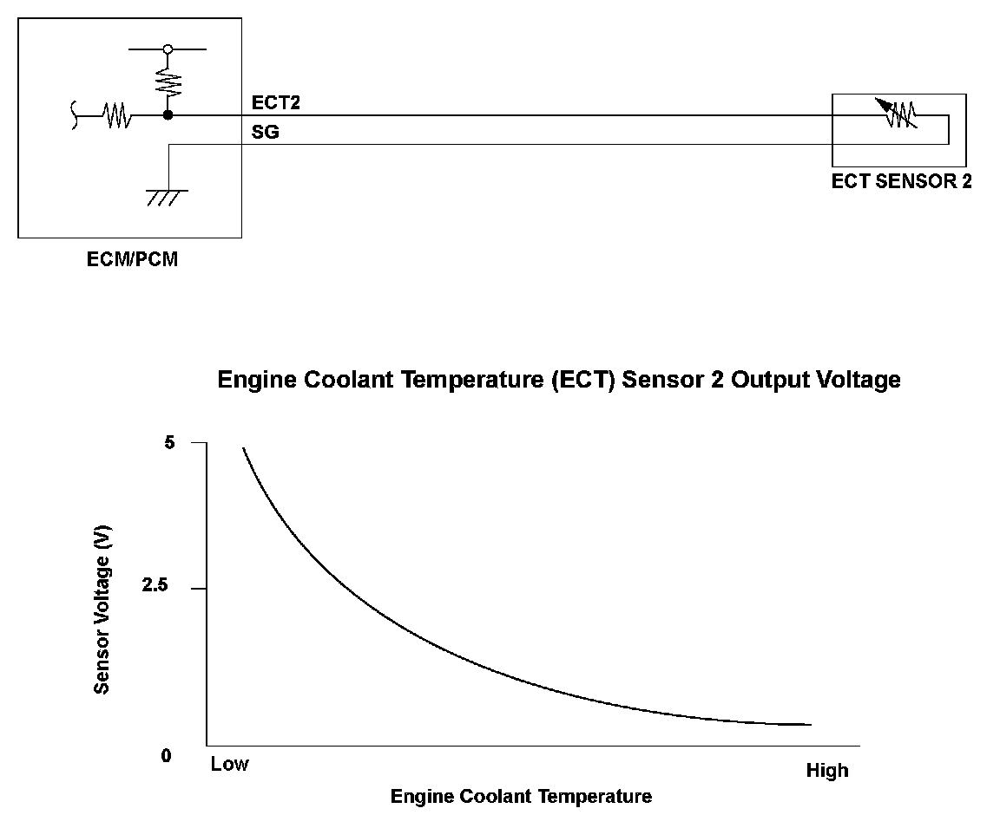
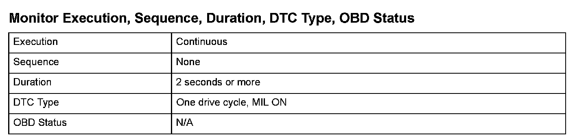
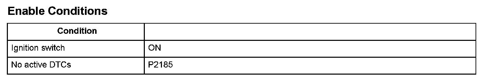

Advanced Diagnostics
DTC P2184: Engine Coolant Temperature (ECT) Sensor 2 Circuit Low Voltage
General Description
The engine coolant temperature (ECT) sensor 2 is a thermistor attached to the radiator. The ECM/PCM applies voltage (about 5 V) to the ECT2 signal circuit through a pull up resistor. As the engine coolant temperature cools, ECT sensor 2 resistance increases, and the ECM/PCM detects a high signal voltage. As the engine coolant warms, the sensor resistance decreases, and the ECM/PCM detects a low ECT2 signal voltage.
If the ECT sensor 2 output voltage is less than a set value when the engine coolant temperature is high, the ECM/PCM detects a malfunction and a DTC is stored.

Monitor Execution, Sequence, Duration, DTC Type, OBD Status

Enable Conditions
Malfunction Threshold
The ECT sensor 2 output voltage is 0.08 V or less for at least 2 seconds.
Diagnosis Details
Conditions for illuminating the MIL
When a malfunction is detected, the MIL comes on and the DTC and the freeze frame data are stored in the ECM/PCM memory.
Conditions for clearing the MIL
The MIL will be cleared if the malfunction does not recur during three consecutive trips in which the diagnostic runs.
The MIL, the DTC, and the freeze frame data can be cleared by using the scan tool Clear command or by disconnecting the battery.